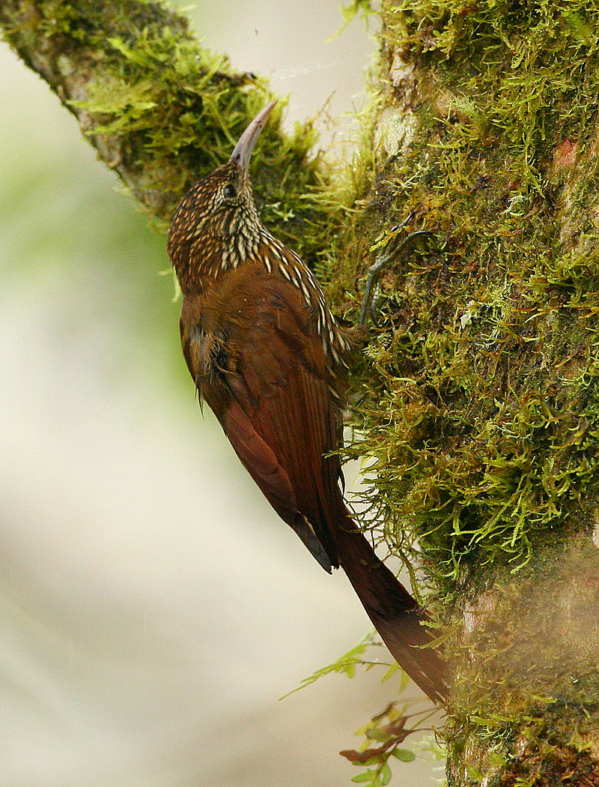
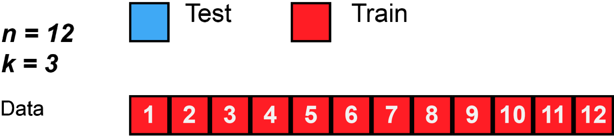

SDM1 : Montane woodcreper - Model¶
Preparation¶
Start R in the bash terminal and run the following lines to install the libraries.
install.packages("rworldmap")
install.packages("maptools")
install.packages("rgeos")
install.packages("reshape")
[4]:
library(ggplot2)
# library(rworldmap)
library(rgdal)
library(raster)
# library(maptools)
library(rgeos)
library(reshape)
library(rasterVis)
library(dismo)
library(InformationValue)
library(mgcv)
Loading required package: sp
rgdal: version: 1.5-23, (SVN revision 1121)
Geospatial Data Abstraction Library extensions to R successfully loaded
Loaded GDAL runtime: GDAL 2.3.3, released 2018/12/14
Path to GDAL shared files: /home/user/miniconda3/share/gdal
GDAL binary built with GEOS: TRUE
Loaded PROJ runtime: Rel. 5.2.0, September 15th, 2018, [PJ_VERSION: 520]
Path to PROJ shared files: /home/user/miniconda3/share/proj
Linking to sp version:1.4-5
rgeos version: 0.5-5, (SVN revision 640)
GEOS runtime version: 3.7.1-CAPI-1.11.1
Linking to sp version: 1.4-5
Polygon checking: TRUE
Loading required package: terra
terra version 1.1.4
NOTE: using GDAL version 2.3.3
For full functionality you need at least version 3.0.4
Attaching package: ‘terra’
The following object is masked from ‘package:reshape’:
expand
The following object is masked from ‘package:rgdal’:
project
Loading required package: lattice
Loading required package: latticeExtra
Attaching package: ‘latticeExtra’
The following object is masked from ‘package:ggplot2’:
layer
Attaching package: ‘dismo’
The following object is masked from ‘package:terra’:
voronoi
Loading required package: nlme
Attaching package: ‘nlme’
The following object is masked from ‘package:terra’:
collapse
The following object is masked from ‘package:raster’:
getData
This is mgcv 1.8-34. For overview type 'help("mgcv-package")'.
[6]:
set.seed(30)
Data Exploration¶
We will use Montane woodcreper (Lepidocolaptes lacrymiger) as example species.
This species has a large range, occurring from the coastal cordillera of Venezuela along the Andes south to south-east Peru and central Bolivia.

Read in points data¶
[7]:
birdrange <- readOGR("./geodata/shp", "cartodb-query")
OGR data source with driver: ESRI Shapefile
Source: "/media/sf_LVM_shared/my_SE_data/exercise/geodata/shp", layer: "cartodb-query"
with 2 features
It has 7 fields
[8]:
options(repr.plot.width=8, repr.plot.height=9)
plot(birdrange)
Load observation presence dataset¶
Let’s suppose that you have done field work and you have collected the bird presence in the Lepidocolaptes_lacrymiger_allpoints.csv file
[58]:
points_field <- read.csv("./geodata/shp/Lepidocolaptes_lacrymiger_allpoints.csv")
str(points_field)
'data.frame': 3438 obs. of 3 variables:
$ lon : num -76.2 -76.2 -74.3 -74.3 -76.1 ...
$ lat : num 3.98 3.93 4.61 4.61 4.75 ...
$ scientific_name: Factor w/ 1 level "Lepidocolaptes_lacrymiger": 1 1 1 1 1 1 1 1 1 1 ...
[115]:
gbif_points = gbif('Lepidocolaptes' , 'lacrymiger' , download=T , geo=T , ext=c(-82,-59,-21,14) , removeZeros=TRUE )
str(gbif_points)
points=rbind.data.frame(
data.frame(lat=gbif_points$lat,lon=gbif_points$lon),
data.frame(lat=points_field$lat,lon=points_field$lon)
)
str(points)
'data.frame': 34835 obs. of 2 variables:
$ lat: num 0.02978 5.3731 4.76848 0.00634 6.40736 ...
$ lon: num -78.7 -75.9 -75.5 -78.7 -75.7 ...
Read the environmental data layers¶
[100]:
rCld <- raster("./geodata/cloud/SA_meanannual_crop_msk.tif")
rCld = setMinMax(rCld)
rCldIA <- raster("./geodata/cloud/SA_intra_crop_msk.tif")
rCldIA = setMinMax(rCldIA)
rElv <- raster("./geodata/dem/SA_elevation_mn_GMTED2010_mn_crop_msk.tif")
rElv = setMinMax(rElv)
rVeg <- raster("./geodata/vegetation/SA_tree_mn_percentage_GFC2013_crop_msk.tif")
rVeg = setMinMax(rVeg)
rElv
class : RasterLayer
dimensions : 4200, 2760, 11592000 (nrow, ncol, ncell)
resolution : 0.008333333, 0.008333333 (x, y)
extent : -82, -59, -21, 14 (xmin, xmax, ymin, ymax)
crs : +proj=longlat +datum=WGS84 +no_defs +ellps=WGS84 +towgs84=0,0,0
source : /media/sf_LVM_shared/my_SE_data/exercise/geodata/dem/SA_elevation_mn_GMTED2010_mn_crop_msk.tif
names : SA_elevation_mn_GMTED2010_mn_crop_msk
values : -72, 6460 (min, max)
[116]:
plot(rElv)
points(points$lon, points$lat, col = "red", cex = .3)
plot(birdrange,add=TRUE)
[117]:
# indicate that these data are presences
presence <- matrix(1,nrow(points),1)
points <- cbind(points,presence)
[119]:
head(points)
| lat | lon | presence |
|---|---|---|
| 0.029785 | -78.68224 | 1 |
| 5.373100 | -75.89100 | 1 |
| 4.768477 | -75.45283 | 1 |
| 0.006336 | -78.67635 | 1 |
| 6.407356 | -75.66417 | 1 |
| 11.107720 | -74.04844 | 1 |
[120]:
# building spatial dataframe
# points <- SpatialPointsDataFrame(points[,c(1,2)], points)
coordinates(points)=c('lon','lat')
[121]:
str(points)
Formal class 'SpatialPointsDataFrame' [package "sp"] with 5 slots
..@ data :'data.frame': 34835 obs. of 1 variable:
.. ..$ presence: num [1:34835] 1 1 1 1 1 1 1 1 1 1 ...
..@ coords.nrs : int [1:2] 2 1
..@ coords : num [1:34835, 1:2] -78.7 -75.9 -75.5 -78.7 -75.7 ...
.. ..- attr(*, "dimnames")=List of 2
.. .. ..$ : NULL
.. .. ..$ : chr [1:2] "lon" "lat"
..@ bbox : num [1:2, 1:2] -81.1 -18.8 -62.6 11.2
.. ..- attr(*, "dimnames")=List of 2
.. .. ..$ : chr [1:2] "lon" "lat"
.. .. ..$ : chr [1:2] "min" "max"
..@ proj4string:Formal class 'CRS' [package "sp"] with 1 slot
.. .. ..@ projargs: chr NA
[122]:
# assign projection
projection(points) <- "+proj=longlat +datum=WGS84"
[123]:
plot(points)
Loading eBird sampling dataset, in order to obtain “absence” data
[124]:
# link to global sampling raster
system("gdal_translate -projwin -82 14 -59 -21 -co COMPRESS=DEFLATE -co ZLEVEL=9 ./geodata/SDM/eBirdSampling_filtered.tif ./geodata/SDM/eBirdSampling_filtered_crop.tif ")
gsampling <- raster("./geodata/SDM/eBirdSampling_filtered_crop.tif")
[125]:
# assign projection
projection(gsampling)="+proj=longlat +datum=WGS84"
gsampling
class : RasterLayer
dimensions : 4200, 2760, 11592000 (nrow, ncol, ncell)
resolution : 0.008333333, 0.008333333 (x, y)
extent : -82, -59, -20.99999, 14 (xmin, xmax, ymin, ymax)
crs : +proj=longlat +datum=WGS84 +ellps=WGS84 +towgs84=0,0,0
source : /media/sf_LVM_shared/my_SE_data/exercise/geodata/SDM/eBirdSampling_filtered_crop.tif
names : eBirdSampling_filtered_crop
values : 0, 65535 (min, max)
[126]:
# convert to points within data region
samplingp <- as(gsampling,"SpatialPointsDataFrame")
samplingp <- samplingp[samplingp$eBirdSampling_filtered_crop>0,]
str(samplingp)
head(samplingp)
Formal class 'SpatialPointsDataFrame' [package "sp"] with 5 slots
..@ data :'data.frame': 17420 obs. of 1 variable:
.. ..$ eBirdSampling_filtered_crop: num [1:17420] 1 2 1 2 1 1 1 4 1 2 ...
..@ coords.nrs : num(0)
..@ coords : num [1:17420, 1:2] -61 -61 -61 -61 -61 ...
.. ..- attr(*, "dimnames")=List of 2
.. .. ..$ : NULL
.. .. ..$ : chr [1:2] "x" "y"
..@ bbox : num [1:2, 1:2] -82 -21 -59 14
.. ..- attr(*, "dimnames")=List of 2
.. .. ..$ : chr [1:2] "x" "y"
.. .. ..$ : chr [1:2] "min" "max"
..@ proj4string:Formal class 'CRS' [package "sp"] with 1 slot
.. .. ..@ projargs: chr "+proj=longlat +datum=WGS84 +ellps=WGS84 +towgs84=0,0,0"
| eBirdSampling_filtered_crop | |
|---|---|
| 2518 | 1 |
| 2519 | 2 |
| 2520 | 1 |
| 2523 | 2 |
| 2525 | 1 |
| 2529 | 1 |
[127]:
# edit column names
colnames(samplingp@data) <- c("observation")
samplingp$presence=0
plot(samplingp, col="green",pch=21,cex=.5)#absences
plot(points, col="red",add=TRUE)#presences
plot(birdrange, col="cyan",add=TRUE)#species range
[128]:
summary(samplingp)
Object of class SpatialPointsDataFrame
Coordinates:
min max
x -81.97917 -59.00417
y -20.99583 13.99584
Is projected: FALSE
proj4string :
[+proj=longlat +datum=WGS84 +ellps=WGS84 +towgs84=0,0,0]
Number of points: 17420
Data attributes:
observation presence
Min. : 1.000 Min. :0
1st Qu.: 1.000 1st Qu.:0
Median : 2.000 Median :0
Mean : 5.935 Mean :0
3rd Qu.: 3.000 3rd Qu.:0
Max. :1412.000 Max. :0
combine presence and non-presence point datasets
[129]:
pdata <- rbind(points[,"presence"],samplingp[,"presence"])
pdata@data[,c("lon","lat")] <- coordinates(pdata)
table(pdata$presence)
0 1
17420 34835
Plot the environmental data layers¶
[130]:
env <- stack(c(rCld,rCldIA,rElv,rVeg))
env
class : RasterStack
dimensions : 4200, 2760, 11592000, 4 (nrow, ncol, ncell, nlayers)
resolution : 0.008333333, 0.008333333 (x, y)
extent : -82, -59, -21, 14 (xmin, xmax, ymin, ymax)
crs : +proj=longlat +datum=WGS84 +no_defs +ellps=WGS84 +towgs84=0,0,0
names : SA_meanannual_crop_msk, SA_intra_crop_msk, SA_elevation_mn_GMTED2010_mn_crop_msk, SA_tree_mn_percentage_GFC2013_crop_msk
min values : 859, 0, -72, 0
max values : 10000, 3790, 6460, 10000
[131]:
# rename layers for convenience
vars <- c("cld","cld_ia","elev","forest")
names(env) <- vars
# visual result
options(repr.plot.width=15, repr.plot.height=9)
# check out the plot
plot(env)
Scaling and centering the environmental variables to zero mean and variance of 1
[132]:
senv <- scale(env[[vars]])
senv
# this operation is quite long. Would be possible to do in gdal? how?
class : RasterBrick
dimensions : 4200, 2760, 11592000, 4 (nrow, ncol, ncell, nlayers)
resolution : 0.008333333, 0.008333333 (x, y)
extent : -82, -59, -21, 14 (xmin, xmax, ymin, ymax)
crs : +proj=longlat +datum=WGS84 +no_defs +ellps=WGS84 +towgs84=0,0,0
source : /tmp/RtmpRDFtNw/raster/r_tmp_2021-04-10_033527_3049_30290.grd
names : cld, cld_ia, elev, forest
min values : -4.5919892, -1.7513057, -0.6661006, -1.7261695
max values : 2.1937157, 4.5331428, 5.0445753, 0.7798705
[133]:
hist(env)
hist(senv)
Warning message in .hist1(raster(x, y[i]), maxpixels = maxpixels, main = main[y[i]], :
“1% of the raster cells were used. 100000 values used.”Warning message in .hist1(raster(x, y[i]), maxpixels = maxpixels, main = main[y[i]], :
“1% of the raster cells were used. 100000 values used.”Warning message in .hist1(raster(x, y[i]), maxpixels = maxpixels, main = main[y[i]], :
“1% of the raster cells were used. 100000 values used.”Warning message in .hist1(raster(x, y[i]), maxpixels = maxpixels, main = main[y[i]], :
“1% of the raster cells were used. 100000 values used.”Warning message in .hist1(raster(x, y[i]), maxpixels = maxpixels, main = main[y[i]], :
“1% of the raster cells were used. 100000 values used.”Warning message in .hist1(raster(x, y[i]), maxpixels = maxpixels, main = main[y[i]], :
“1% of the raster cells were used. 100000 values used.”Warning message in .hist1(raster(x, y[i]), maxpixels = maxpixels, main = main[y[i]], :
“1% of the raster cells were used. 100000 values used.”Warning message in .hist1(raster(x, y[i]), maxpixels = maxpixels, main = main[y[i]], :
“1% of the raster cells were used. 100000 values used.”
Annotate the point records with the scaled environmental data
[134]:
df.xact <- raster::extract(senv,pdata,sp=T)
[135]:
df.xact <- (df.xact[! is.na(df.xact$forest),])
Correlation plots¶
[136]:
## convert to 'long' format for easier plotting
df.xactl <- reshape::melt(df.xact@data,id.vars=c("lat","lon","presence"),variable.name="variable")
[137]:
head(df.xactl)
| lat | lon | presence | variable | value |
|---|---|---|---|---|
| 0.029785 | -78.68224 | 1 | cld | 1.927959 |
| 5.373100 | -75.89100 | 1 | cld | 1.966560 |
| 4.768477 | -75.45283 | 1 | cld | 2.029659 |
| 0.006336 | -78.67635 | 1 | cld | 1.997739 |
| 6.407356 | -75.66417 | 1 | cld | 1.138112 |
| 11.107720 | -74.04844 | 1 | cld | 1.684472 |
[138]:
tail(df.xactl)
| lat | lon | presence | variable | value | |
|---|---|---|---|---|---|
| 207399 | -20.97083 | -70.13750 | 0 | forest | -1.726169 |
| 207400 | -20.97083 | -68.56250 | 0 | forest | -1.726169 |
| 207401 | -20.97916 | -70.15417 | 0 | forest | -1.726169 |
| 207402 | -20.98749 | -68.55417 | 0 | forest | -1.726169 |
| 207403 | -20.99583 | -70.13750 | 0 | forest | -1.726169 |
| 207404 | -20.99583 | -67.42917 | 0 | forest | -1.726169 |
[139]:
ggplot(df.xactl,aes(x=value,y=presence))+facet_wrap(~variable)+
geom_point()+
stat_smooth(method = "lm", formula = y ~ x + I(x^2), col="red")+
geom_smooth(method="gam",formula=y ~ s(x, bs = "cs")) +
theme(text = element_text(size = 20))
Model Fitting¶
cross validation

[140]:
df.xact <- as.data.frame(df.xact)
[141]:
df.xact$grp <- kfold(df.xact,2)
[142]:
head(df.xact)
| presence | lon | lat | cld | cld_ia | elev | forest | lon.1 | lat.1 | grp |
|---|---|---|---|---|---|---|---|---|---|
| 1 | -78.68224 | 0.029785 | 1.927959 | -1.4047492 | 0.7799278 | 0.2916939 | -78.68224 | 0.029785 | 2 |
| 1 | -75.89100 | 5.373100 | 1.966560 | -1.5490096 | 0.9285523 | 0.4776421 | -75.89100 | 5.373100 | 1 |
| 1 | -75.45283 | 4.768477 | 2.029659 | -1.4279635 | 3.0433908 | -1.4251941 | -75.45283 | 4.768477 | 1 |
| 1 | -78.67635 | 0.006336 | 1.997739 | -1.4097236 | 1.0081102 | 0.4074729 | -78.67635 | 0.006336 | 1 |
| 1 | -75.66417 | 6.407356 | 1.138112 | -0.8791106 | 1.6227160 | -0.6916761 | -75.66417 | 6.407356 | 2 |
| 1 | -74.04844 | 11.107720 | 1.684472 | -1.0664833 | 1.5134332 | -0.6926786 | -74.04844 | 11.107720 | 2 |
[143]:
mdl.glm <- glm(presence~cld+cld_ia*I(cld_ia^2)+elev*I(elev^2)+forest, family=binomial(link=logit), data=subset(df.xact,grp==1))
[144]:
summary(mdl.glm)
Call:
glm(formula = presence ~ cld + cld_ia * I(cld_ia^2) + elev *
I(elev^2) + forest, family = binomial(link = logit), data = subset(df.xact,
grp == 1))
Deviance Residuals:
Min 1Q Median 3Q Max
-2.9786 -0.0259 0.2245 0.3542 4.6843
Coefficients:
Estimate Std. Error z value Pr(>|z|)
(Intercept) -3.01092 0.09349 -32.207 < 2e-16 ***
cld 0.97331 0.07360 13.225 < 2e-16 ***
cld_ia 0.14549 0.08344 1.744 0.0812 .
I(cld_ia^2) 0.30934 0.03284 9.420 < 2e-16 ***
elev 5.87632 0.20179 29.121 < 2e-16 ***
I(elev^2) -3.04689 0.16585 -18.371 < 2e-16 ***
forest 1.15308 0.04215 27.354 < 2e-16 ***
cld_ia:I(cld_ia^2) -0.13518 0.02612 -5.174 2.29e-07 ***
elev:I(elev^2) 0.39002 0.03988 9.780 < 2e-16 ***
---
Signif. codes: 0 ‘***’ 0.001 ‘**’ 0.01 ‘*’ 0.05 ‘.’ 0.1 ‘ ’ 1
(Dispersion parameter for binomial family taken to be 1)
Null deviance: 32790 on 25925 degrees of freedom
Residual deviance: 11125 on 25917 degrees of freedom
AIC: 11143
Number of Fisher Scoring iterations: 7
Prediction¶
Calculate estimates of p(occurrence) for each cell. We can use the predict function in the raster package to make the predictions across the full raster grid and save the output.
[145]:
pred.glm1 <- predict(mdl.glm,df.xact[which(df.xact$grp==1),vars],type="response")
pred.glm2 <- predict(mdl.glm,df.xact[which(df.xact$grp==2),vars],type="response")
[146]:
plotROC(df.xact[which(df.xact$grp==1),"presence"],pred.glm1)
[147]:
plotROC(df.xact[which(df.xact$grp==2),"presence"],pred.glm2)
Out mapping¶
[148]:
p1 <- raster::predict(senv,mdl.glm,type="response")
Plot the results as a map:
[149]:
options(repr.plot.width=8, repr.plot.height=9)
gplot(p1)+geom_tile(aes(fill=value))+
scale_fill_gradientn(
colours=c("blue","green","yellow","orange","red"),
na.value = "transparent")+
geom_polygon(aes(x=long,y=lat,group=group),
data=fortify(birdrange),fill="transparent",col="darkred")+
geom_point(aes(x = lon, y = lat), data = subset(df.xact,presence==1),col="black",size=0.5)+
coord_equal()
Regions defined for each Polygons